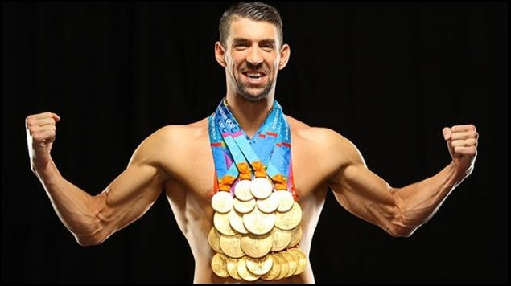
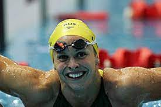
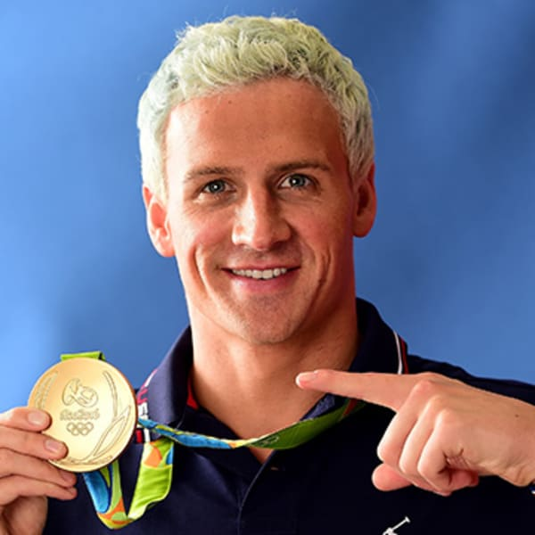
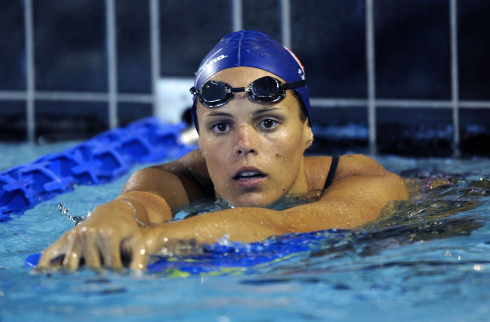
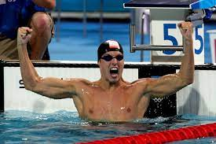
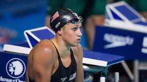
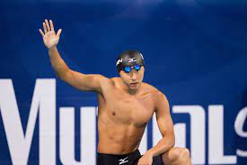
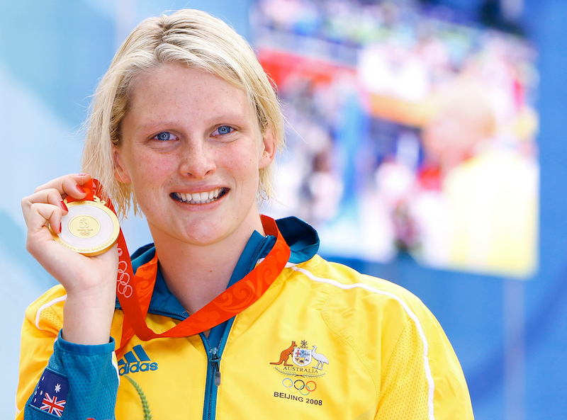
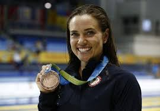
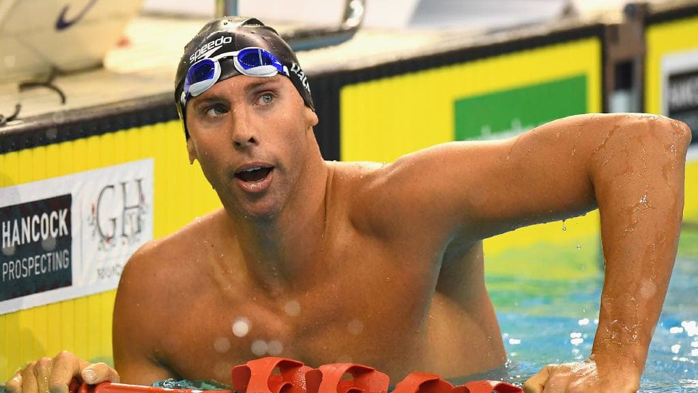

Lista de nadadores a seguir en olimpiadas de Beijing el próximo año tras su desempeño en el mundial de natación:
1. MICHAEL PHELPS: Con siete medallas de oro y cinco nuevas plusmarcas mundiales en Melbourne cuatro de ellas individuales, el estadounidense será el rival a batir en Beijing. Su reto de igualar o superar el récord de Mark Spitz siete preseas doradas en una olimpiada será el mayor aliciente para seguirlo en China. En las olimpiadas de Atenas 2004, el de Baltimore sumó seis metales dorados.

2. LIBBY LENTON: Una de las grandes figuras de la natación femenina australiana, conquistó 5 preseas doradas en Melbourne, 50 y 100 libre, 100 mariposa, 4x100 libre y 4x100 combinado. En los 100 libre se midió a estrellas como la alemana Britta Steffen y la estadounidense Natalie Coughlin.

3. RYAN LOCHTE: Dio la sorpresa en los 200 espalda al derrotar a Aaron Peirsol, imbatido en la modalidad desde las olimpiadas de Sydney 2000. Lochte además impuso el récord mundial y también ganó el oro en los 4x100 libre. De no mediar una lesión, el estadounidense deberá confirmar en Beijing que lo de Melbourne no fue un mal día de Peirsol. El nadador fue medalla de plata en los 400 combinado, para un total de cinco medallas en toda la justa.

4. LAURE MANAUDOU: La francesa confirmó en Australia que es la reina de la media distancia, al coronarse en los 200 y 400 metros estilo libre. En los 200 impuso un nuevo récord mundial. Fue plata en los 800 libre y fracasó en los 1.500 al haber querido nadar demasiadas pruebas.

5. PIETER VAN DEN HOOGENBAND: El holandés pasó con más pena que gloria en el mundial de natación y sigue sin conquistar una presea dorada en este tipo de torneos. Sin embargo, en Beijing buscará reeditar por tercera vez el título en los 100 libre.

6. KATIE HOFF: A sus 17 años, la nadadora de Abingdon se perfila como la nadadora más dominante del futuro en Estados Unidos. Su dominio de los cuatro estilos los ha estado desarrollando en los últimos años. En Montreal 2005 obtuvo tres oros y en Melbourne dos. En Beijing su principal rival será Manaudou en los 200 combinado, pero se antoja difícil que alguien logre igualar su marca mundial en los 400 combinado (4 minutos, 33.89 segundos).

7. KOSUKE KITAJIMA: Un virus dejó en la cuneta a su rival Brendan Hansen, por lo que el japonés se hizo con facilidad con los 200 pecho en Melbourne. Kitajima-Hansen sostienen una de las rivalidades más reñidas de la natación.

8. LEISEL JONES: Junto a Lenton, es una de las joyas australianas de la piscina. Se alzó con tres preseas doradas, en los 100 y 200 pecho y en los 4x100 combinado. A punto estuvo de conquistar una cuarta en los 50 pecho, donde quedó con bronce.

9. NATALIE COUGHLIN: La estadounidense sumó dos medallas de oro en Melbourne, una cifra que iguala su récord en Fukuoka 2001. La especialista en espalda es una de las estrellas en su país y se convirtió en Atenas 2004 en la tercera estadounidense en obtener cinco medallas en una olimpiada, dos de oro, dos de plata y una de bronce.

10. GRANT HACKETT: El rey absoluto de la distancia perdió la corona en su hogar. Cayó en 400, 800 y 1500 libre. Beijing será su oportunidad para resarcirse o dar paso a figuras como el polaco Mateusz Sawrymowicz o el estadounidense Larsen Jensen.
